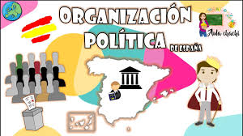
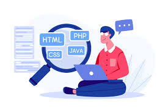
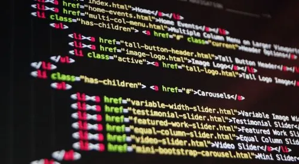

POP
Hola, soy Pedro, un administrador y posterior programador de desarrollo de sistemas informáticos.
Administración
Desde el año 2018 al año 2020, he dedicado mi tiempo a estudiar administración, siendo esta una FP básica, donde empecé a estudiar conceptos básicos sobre la administración. También en esta formación realicé prácticas de modalidad no presencial, haciendo actividades que te harían hacer como administrativo, debido a la situación del COVID-19. En los posteriores años de 2021 al año 2023, he dedicado mi tiempo a estudiar programación, siendo esta una FP grado medio, centrándome todos esos años en el desarrollo en labores y actividades administrativas, donde también hice prácticas en una empresa denominada ALCOMASA, donde realicé diferentes actividades relacionadas con la administración y documentación de la empresa.
Política

Entre los años 2019 hasta 2026, me he ido involucrando en informarme y en el saber de la política nacional española y la política internacional, y últimamente la geopolítica, a base de diferentes modelos de información y de contrastar diferentes opiniones para saber y poder opinar al respecto. A parte de, a futuro, querer ver más en estos aspectos y a futuro inscribirme a un curso para saber más en estos aspectos, tanto en el aspecto político como geopolítico.
Programación


En el año 2024-2025, he decidido estudiar un grado superior de desarrollo de aplicaciones multiplataforma, donde he practicado en diferentes lenguajes de programación como Java, PHP, HTML y CSS, y a utilizar diferentes herramientas de desarrollo como NetBeans, Visual Studio Code, y a utilizar diferentes bases de datos como MySQL. También realizamos múltiples máquinas virtuales y de diferentes sistemas operativos VirtualBox (VBOX), y como último, también utilizamos GitHub para almacenar códigos y hacer commits.
CEAT-DESARROLLO DE SISTEMAS INFORMATICOS

En el año 2025, he decidido estudiar en CEAT un curso de Programación de sistemas informáticos, donde he refrecado y he aprendido HTML,CSS y JS y vincularlos en un proyecto,tambien he aprendido contenido del lenguaje de programacion de JAVA y Programacion Orientada a Objetos, tambien aprendimos a usar y crear BDD (bases de datos) usando PhpmyAdmin con Xampp, y en la curva final del curso usamos Springboot combinando todos los conocimientos anteriores HTML,CSS,JS,JAVA,BDD y aprendiendo cosas nuevas usando Springboot en el entorno de BDD y la Seguridad. En las FCTS use una herramienta de creacion de paginas web,diseño y mejoras del SEO en WORDPRESS ELEMENTOR.
En el año 2026, estoy esudiando en CEAT un curso (DATW) -> Desarrollo de Aplicaciones con Tecnologia Web Donde hemos repasado HTML,CSS Y JS, tambien vamos a dar salto a usar un herramienta web WORDPRESS,hasta ahora hemos llegado aqui.